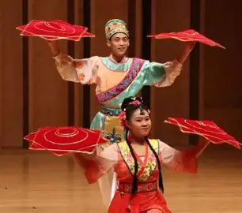

关东文化底蕴
长春地处关东腹地，承载着丰富的关东文化底蕴。这里既有东北人豪爽直率的性格特点，又融合了多元的文化元素，形成了独具特色的关东风情。
"长春人热情好客，关东文化在这里得到了最好的传承和发扬。"
🎭二人转艺术
东北二人转是关东文化的瑰宝，在长春有着广泛的群众基础。

🎵关东民谣
聆听纯正的关东民谣，感受这片土地的情感与故事。
《关东情》- 传统民谣
民俗与节庆
长春保留了许多传统的关东民俗活动，从春节的庙会到夏季的民间艺术节，无不体现着这片土地的独特魅力。
🏮春节庙会
长春的春节庙会热闹非凡，各种传统小吃和手工艺品令人流连忘返。
🎨民间手工艺
关东剪纸、葫芦雕刻等传统手工艺在长春得到了很好的保护和传承。

关东美食文化
长春的关东美食以其浓郁的地方特色和独特的口味闻名，是关东文化的重要组成部分。
锅包肉
外酥里嫩，酸甜可口，是长春最具代表性的菜肴之一。
猪肉炖粉条
关东传统家常菜，香气四溢，温暖人心。
长春冷面
夏季消暑佳品，酸甜爽口，风味独特。
🍲美食制作
观看关东传统美食的制作过程，了解其背后的文化内涵。
方言与口语
长春方言属于东北官话，直白幽默，富有表现力，是关东文化的重要载体。
🗣️方言示例
聆听地道的长春方言，感受关东语言的独特魅力。
长春方言日常用语
📖方言词汇
一些常用的长春方言词汇及其含义。
- 嘎哈 - 干什么
- 嗯呐 - 是的
- 唠嗑 - 聊天
- 得劲 - 舒服
- 贼 - 非常